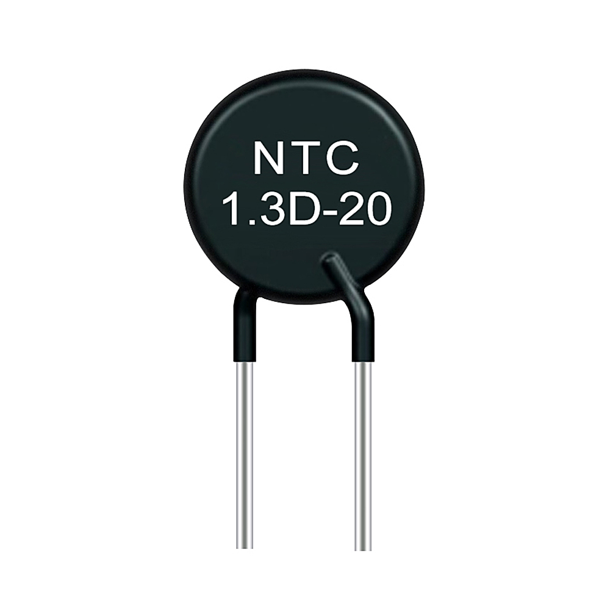
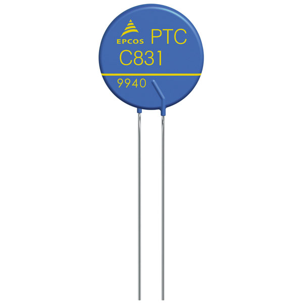
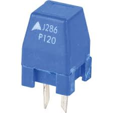
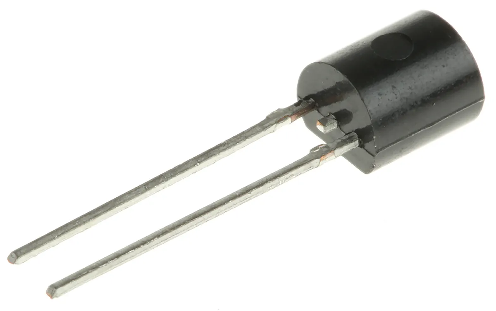

Welcome to ElectroSpecs | Explore Electronics Components | Learn & Build 🚀

NTC THERMISTOR(NEGATIVE TEMPERATURE COEFFICIENT)

PTC THERMISTOR(POSITIVE TEMPERATURE COEFFICIENT)

SWITCHING PTC THERMISTOR

LINEAR PTC THERMISTOR